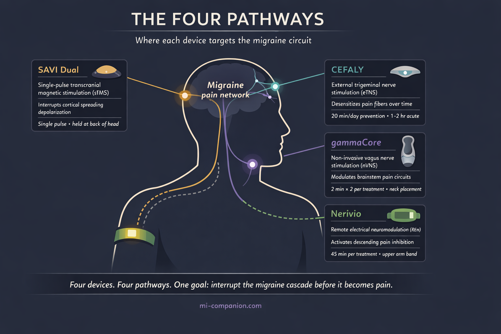
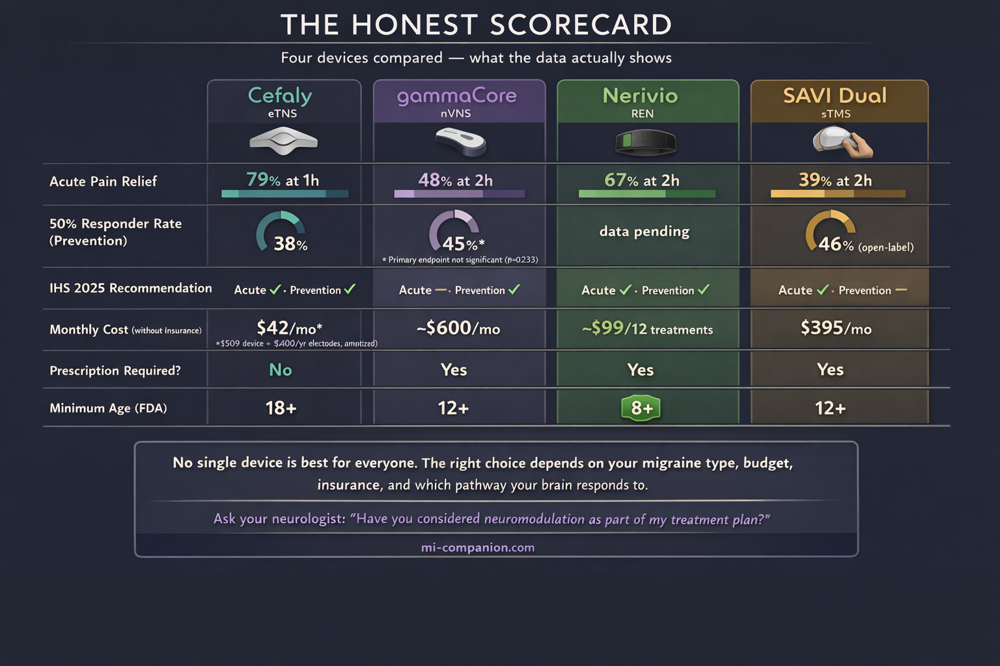

By Rustam Iuldashov
30 years lived experience with chronic migraine | Sources: 35 peer-reviewed references including Cephalalgia (IHS Guidelines, 15 RCTs), Lancet Neurology (n=164), Journal of Headache and Pain (meta-analysis, 38 studies) | Last updated: March 12, 2026
Medical Review: This content is based on peer-reviewed research from Cephalalgia, Lancet Neurology, Neurology, Journal of Headache and Pain, Headache, Brain, Science Translational Medicine, Scientific Reports, Practical Neurology, Current Pain and Headache Reports, and Advances in Therapy.
Important Notice: This article is for informational purposes only and does not replace professional medical advice. The author is not a licensed physician or healthcare professional. Always consult your doctor before making changes to your treatment plan.
Key Takeaways
- Six non-invasive neuromodulation devices are now FDA-cleared for migraine, targeting different nerve pathways with electricity or magnetism — all drug-free, all with favorable safety profiles[4][5]
- The 2025 International Headache Society guidelines conditionally recommend Cefaly, Nerivio, and SAVI Dual for acute treatment, and gammaCore, Cefaly, and Nerivio for prevention — but evidence quality ranges from moderate to very low[5]
- Real-world data and patient communities show roughly 50–60% of users report meaningful benefit, though individual response varies significantly — a 90-day trial is the only way to know if a device works for you[13]
- Nerivio has the broadest evidence base, most insurance coverage, and lowest cost. SAVI Dual has the best data for migraine with aura. gammaCore is uniquely versatile for multiple headache types. Cefaly requires no prescription and has the longest track record[5][15]
- Insurance coverage remains the biggest barrier — most plans still classify devices as experimental, though VA coverage is available for nearly all devices, and Nerivio coverage has reached 30 million Americans[25][26][32]
- These devices work best as part of a combination approach, started early in an attack and used consistently for prevention — not as standalone miracle cures[23][35]
Picture this: a device the size of a smartphone strapped to your arm, buzzing for 45 minutes. By the time it stops, your migraine is gone. No pills. No needles. No rebound headache the next morning.
That device exists. So does one that sticks to your forehead and rewires your trigeminal nerve while you doze. Another zaps your vagus nerve through your neck in four minutes. And a fourth fires a single magnetic pulse into the back of your skull — silencing the electrical storm before it spreads.
They sound like science fiction. They are all FDA-cleared. And most people living with migraine have never heard of a single one.
This is neuromodulation — the drug-free frontier of migraine treatment. Not pills. Not injections. Carefully calibrated electricity and magnetism, delivered through the skin, aimed directly at the nerves and brain circuits that drive migraine attacks. The promise is enormous. The evidence is growing. But the reality is more complicated than any device manufacturer wants you to believe.
What Neuromodulation Actually Does to Your Brain
Every migraine begins as a cascade of rogue nerve signals.
For some people, it starts with cortical spreading depolarization — a slow wave of electrical silence that rolls across the brain’s surface like a citywide power outage, block by block.[1] For others, the trigeminal nerve launches the attack. Think of it as the brain’s fire alarm — except in migraine, it screams when someone is making toast.[2] And for still others, the vagus nerve plays a central role: a superhighway between brain and body that regulates pain, mood, and inflammation.[3]
Neuromodulation devices interrupt these cascades at different points. Think of them as circuit breakers for a short-circuiting brain. One targets the trigeminal nerve at the forehead. Another reaches the vagus nerve in the neck. A third activates pain-suppression circuits through the arm. A fourth silences the electrical wave at its origin in the skull.[4]
The shared advantage: no chemicals flooding the body. No liver processing, no drug interactions, no medication overuse headache.
As of 2025, the International Headache Society has issued formal evidence-based guidelines recommending several of these devices for both acute and preventive migraine treatment.[5] The American Headache Society includes neuromodulation in its consensus treatment recommendations.[6] Six non-invasive devices now carry FDA clearance. Yet most neurologists mention them only after medications fail — if they mention them at all.

The Devices: What the Science Actually Shows
Cefaly — The Forehead Stimulator
Cefaly is the veteran. FDA-cleared for prevention since 2014, for acute treatment since 2017, it sends tiny electrical pulses through a forehead electrode to the supraorbital branch of the trigeminal nerve. Over time, it desensitizes those fibers — raising the threshold at which they fire the alarm.[7]
The evidence starts strong. The PREMICE trial (n=67, double-blind, sham-controlled) found that daily 20-minute sessions for three months cut migraine days by 30% in the active group. The sham group? Essentially no change. The 50% responder rate was 38% for active versus 12% for sham — a therapeutic gain of 26%, squarely within range of established preventive medications.[8] A survey of over 400 long-term users revealed something unexpected: 89% also used it during attacks, reducing acute medication intake by an average of 3.3 doses per month per person.[9] Japanese researchers validated the approach in 100 patients across four headache centers, finding similar efficacy and remarkably high compliance — 90% of participants used the device consistently.[10]
For acute treatment, the results are solid. The ACME trial (n=106) showed 79% pain relief and 32% pain freedom after one hour.[11] The larger TEAM study (n=538) found that 56% of patients reported resolution of their most bothersome symptom, with 25% achieving complete pain freedom at two hours.[12]
But here is where the clinical numbers meet human experience. Across Reddit threads, patient forums, and Mayo Clinic Connect, about 60% of users call Cefaly effective. Roughly a quarter find it does nothing. And a small but vocal minority report the stimulation as unbearable — particularly people with allodynia, that hallmark skin sensitivity where even a breeze across the forehead feels like sandpaper.[13] One chronic migraine patient summarized it perfectly: Cefaly is not a standalone miracle. It works best when paired with everything else — consistent sleep, exercise, clean diet. It is one tool, not the whole toolbox.
Cefaly at a Glance
Target: Trigeminal nerve (forehead electrode) · FDA cleared: 2014 (prevention), 2017 (acute)
Best evidence: 30% fewer migraine days (PREMICE, n=67); 79% pain relief at 1 hour (ACME, n=106)[8][11]
Real-world satisfaction: ~60% positive[13] · Cost: $509 device + ~$400/year electrodes · Prescription: Not required
gammaCore — The Vagus Nerve Stimulator
gammaCore takes a fundamentally different route. Instead of the trigeminal nerve, it targets the vagus nerve in the neck — modulating brainstem circuits that include the nucleus tractus solitarius and locus coeruleus, both deeply implicated in pain processing.[14] It holds the broadest indication set of any neuromodulation device: migraine, cluster headache, hemicrania continua, and paroxysmal hemicrania.[15]
The migraine evidence is promising but imperfect. The PREMIUM II trial (n=231, double-blind, sham-controlled) was designed for roughly 300 patients but closed early when COVID-19 shut down clinical sites. In the modified intent-to-treat group (n=113), 45% of gammaCore users achieved at least a 50% reduction in monthly migraine days, compared to 27% for sham. That is clinically meaningful. But the primary endpoint — mean reduction in migraine days — did not reach statistical significance: 3.1 versus 2.3 days (p=0.233).[16] One subgroup, however, stood out dramatically: patients with migraine with aura experienced 5.5 fewer headache days on gammaCore versus 2.7 for sham — a finding that doubled the therapeutic gain.[17] The PRESTO trial showed that 48% of patients achieved substantial pain relief within two hours of acute use.[18]
Patient reviews swing to extremes. On the OUCH UK cluster headache forum, one user described two months of twice-daily preventive use after which their headaches “completely disappeared.” A UK patient reported that gammaCore reduced the intensity and frequency of their cluster headaches dramatically. But these super-responders exist alongside patients who report no benefit whatsoever.[19] The honest assessment: gammaCore works exceptionally well for some, modestly for others, and not at all for a significant minority — with cluster headache patients generally responding better than migraine patients.
gammaCore at a Glance
Target: Vagus nerve (neck stimulation) · FDA cleared: Migraine (acute + prevention), cluster headache, hemicrania continua, paroxysmal hemicrania
Best evidence: 45% achieved ≥50% reduction in migraine days (PREMIUM II, n=113); doubled effect in migraine with aura[16][17]
Real-world satisfaction: Highly polarized — super-responders alongside non-responders[19] · Cost: ~$600/month (prescription required) · VA covered: Yes
Nerivio — The Arm-Worn Wonder
Nerivio takes the most counterintuitive approach of all. It straps to your upper arm and delivers electrical stimulation that hijacks a built-in pain-management system called conditioned pain modulation. The brain receives a controlled sensory signal from the arm — and in response, turns down the volume on pain throughout the body, including in the head.[20] Buzz your arm to fix your brain. It sounds absurd. The data says otherwise.
The pivotal RCT (n=252, double-blind, sham-controlled) demonstrated pain relief at two hours in 67% of the active group versus 39% for sham. Pain freedom at 24 hours showed an odds ratio of 2.64 favoring active treatment.[21] For prevention, a separate trial (n=248) with every-other-day use showed significant reductions in monthly migraine days.[22] Then came the real-world numbers that silenced the skeptics: analysis of over 23,000 treatments confirmed that starting treatment within the first hour of an attack nearly doubled relief rates compared to waiting.[23] And a three-year longitudinal study of 224 patients recently delivered perhaps the most important finding for any chronic treatment: no tachyphylaxis. The device works just as well in year three as it did on day one. No dose increases needed.[24]
Nerivio’s adoption trajectory speaks volumes. Over one million treatments in the U.S. by late 2024. FDA clearance expanded down to age 8 — the youngest for any migraine device. Safety demonstrated in pregnant women. The American Headache Society lists it as a Tier 2 treatment. Insurance coverage now reaches 30 million Americans, including VA and multiple Medicaid programs.[25][26]
From patient testimonials: one user reported being able to attend a concert for the first time in over a decade. A school study found that 65% of children treated migraine in the classroom without leaving their seats.
Nerivio at a Glance
Target: Conditioned pain modulation (upper arm stimulation) · FDA cleared: 2019 (acute), expanded to prevention and ages 8+
Best evidence: 67% pain relief at 2 hours (RCT, n=252); no tachyphylaxis over 3 years (n=224)[20][24]
Real-world adoption: 1M+ treatments in the U.S.; safe in pregnancy[25] · Cost: ~$99 per device (12 treatments); as low as $10 copay · Insurance: 30M+ Americans covered
SAVI Dual (formerly SpringTMS) — The Magnetic Pulse
While the other devices use electricity, SAVI Dual reaches directly into the brain. A single magnetic pulse, fired at 0.9 Tesla against the back of the skull, induces a brief electrical current in the occipital cortex — the exact region where cortical spreading depolarization originates. It aims to stop the electrical storm at its source.[27]
The landmark Lancet Neurology trial (n=164, double-blind, sham-controlled) found 39% pain-free at two hours versus 22% for sham, with sustained benefit at 24 and 48 hours.[28] A large UK post-market program (n=426) showed 62% of patients reporting pain relief at three months, with concurrent improvements in nausea, photophobia, and phonophobia.[29] Adolescent trials validated the approach in patients aged 12–17, reducing headache days from 13.3 to 8.8 over 16 weeks.[30] A 12-month study in difficult-to-treat patients — chronic migraine, medication overuse headache, multiple failed preventives — confirmed that those who responded at three months maintained their gains.[31]
SAVI Dual has the strongest rationale for migraine with aura, since it directly targets the mechanism believed to generate aura. But it also carries the thinnest evidence base for prevention: no randomized preventive trial met IHS eligibility criteria.[5] And it comes with the highest price: $395 per month as a subscription, though VA benefits cover it fully.
SAVI Dual at a Glance
Target: Occipital cortex (single magnetic pulse to back of skull) · FDA cleared: 2014 (acute), 2017 (prevention), 2019 (adolescents 12+)
Best evidence: 39% pain-free at 2 hours vs. 22% sham (Lancet Neurology, n=164); 62% pain relief at 3 months (UK program, n=426)[28][29]
Best suited for: Migraine with aura · Cost: $395/month (subscription) · VA covered: Yes

The Uncomfortable Truth: Why Your Doctor Hasn’t Mentioned These
Six FDA-cleared devices. International guideline recommendations. Growing evidence. So why the silence?
⚠️ When to Seek Emergency Help
Neuromodulation devices are designed for diagnosed migraine, not for new or unusual headache. If you experience a sudden, severe headache unlike anything you’ve had before — especially with confusion, vision loss, weakness on one side, stiff neck, or fever — call your local emergency number immediately.
These symptoms could indicate a stroke, brain hemorrhage, or meningitis. No device, no article, no app replaces emergency care. Do not use this article to self-diagnose.
Start with money. Most insurance plans still classify neuromodulation as “investigational or experimental.”[32] Physicians who recommend treatments their patients cannot afford invite frustration on both sides. Then add marketing: pharmaceutical companies spend billions educating doctors about drugs. Device manufacturers operate on a fraction of that budget. A Cefaly rep does not buy dinner for a neurology conference.
There is also a cultural reflex. The prescription pad is familiar. Devices demand patient education, proper technique coaching, and realistic expectation-setting about response timelines — all of which require appointment time that overbooked neurologists rarely have.[33]
And the evidence, while real, comes with asterisks. The IHS 2025 guidelines rated most device evidence as “very low to moderate” and issued only conditional recommendations — a significant step below the strong endorsements behind CGRP therapies.[5] Device trial sample sizes are typically smaller than drug trials. Designing a convincing sham for something that creates physical sensation is harder than making a sugar pill. And COVID-19 forced the early closure of at least one major trial, limiting the statistical power of key findings.[34]
None of this means the devices don’t work. It means the system hasn’t caught up with the science.
Who Benefits Most — And How to Think About This
Neuromodulation is not a replacement for your migraine toolkit. It is a powerful addition to it. The people most likely to benefit fall into specific categories: those who cannot tolerate medication side effects; people at risk for medication overuse headache from too-frequent triptan or NSAID use; pregnant or breastfeeding women who need to avoid most drugs; children and adolescents; anyone who prefers drug-free approaches; and patients whose medications work partially but leave room for improvement.[35]
The single most important pattern from both clinical trials and patient communities: these devices work best in combination — with medications, with lifestyle changes, with patience. Most require 8–12 weeks of consistent use before preventive benefits emerge. And starting acute treatment early — within that first hour — consistently outperforms waiting.[23]
One more truth that trials cannot measure but forums make crystal clear: neuromodulation gives people a sense of control. You are not swallowing a pill and waiting. You are doing something. For a disease that steals your sense of agency, that matters more than any p-value.
⚕️ Important Medical Disclaimer
This article is for informational and educational purposes only and does not constitute medical advice, diagnosis, or treatment. The author, Rustam Iuldashov, is not a licensed physician, neurologist, or healthcare professional. He is a patient advocate with 30 years of personal experience living with chronic migraine.
All clinical claims in this article are sourced from peer-reviewed research published in indexed medical journals. Study designs and sample sizes are noted where applicable.
Neuromodulation devices are medical devices with specific contraindications. Patients with implanted metallic or electronic devices (pacemakers, cochlear implants), active seizure disorders, or certain cardiac conditions should not use these devices without consulting their physician. Pregnancy safety data exists only for Nerivio; other devices should be discussed with your doctor before use during pregnancy.
Always consult a qualified healthcare provider for questions about your individual health, migraine treatment, or device selection. This content was last reviewed for accuracy on March 12, 2026.
References
- Ayata C, Lauritzen M. “Spreading depression, spreading depolarizations, and the cerebral vasculature.” Physiological Reviews, 95(3):953-993 (2015). doi:10.1152/physrev.00027.2014. Study design: Review.
- Ashina M. “Migraine.” New England Journal of Medicine, 383(19):1866-1876 (2020). doi:10.1056/NEJMra1915327. Study design: Review.
- Johnson RL, Wilson CG. “A review of vagus nerve stimulation as a therapeutic intervention.” Journal of Inflammation Research, 11:203-213 (2018). doi:10.2147/JIR.S163248. Study design: Review.
- Moisset X, Pereira B, Ciampi de Andrade D, et al. “Neuromodulation techniques for acute and preventive migraine treatment: a systematic review and meta-analysis of randomized controlled trials.” Journal of Headache and Pain, 21(1):142 (2020). doi:10.1186/s10194-020-01204-4. Study design: Systematic review/Meta-analysis. n=38 studies.
- Yuan H, Orr SL, Al-Karagholi MAM, et al. “International Headache Society evidence-based guidelines on the use of non-invasive neuromodulation devices for the acute and preventive treatment of migraine.” Cephalalgia (2025). doi:10.1177/03331024251388377. Study design: Systematic review/Clinical practice guidelines. n=15 eligible RCTs.
- Ailani J, Burch RC, Robbins MS. “The American Headache Society Consensus Statement: Update on integrating new migraine treatments into clinical practice.” Headache, 61(7):1021-1039 (2021). doi:10.1111/head.14153. Study design: Expert consensus.
- Riederer F, Penning S, Schoenen J. “Transcutaneous supraorbital nerve stimulation (t-SNS) with the Cefaly® device for migraine prevention: a review of the available data.” Pain Therapy, 4:135-147 (2015). doi:10.1007/s40122-015-0039-5. Study design: Review.
- Schoenen J, Vandersmissen B, Jeangette S, et al. “Migraine prevention with a supraorbital transcutaneous stimulator: a randomized controlled trial.” Neurology, 80(8):697-704 (2013). doi:10.1212/WNL.0b013e3182825055. Study design: RCT (double-blind, sham-controlled). n=67.
- Schoenen J, Coppola G, Di Clemente L, et al. “A survey on migraine attack treatment with the CEFALY device.” Journal of Headache and Pain, 18(Suppl 1):40 (2017). doi:10.1186/s10194-017-0747-x. Study design: Cross-sectional survey. n=413.
- Suzuki K, Takeshima T, Igarashi H, et al. “The safety and preventive effects of a supraorbital transcutaneous stimulator in Japanese migraine patients.” Scientific Reports, 9:9855 (2019). doi:10.1038/s41598-019-46044-8. Study design: Prospective open-label. n=100.
- Chou DE, Shnayderman Yugrakh M, Weng S, et al. “Acute migraine therapy with external trigeminal neurostimulation (ACME): a randomized controlled trial.” Cephalalgia, 39(1):3-14 (2019). doi:10.1177/0333102418811573. Study design: RCT (double-blind, sham-controlled). n=106.
- Tepper SJ, Cady RK, Silberstein SD, et al. “TEAM study: Two-hour external trigeminal neurostimulation for the acute treatment of migraine.” Headache, 63(10):1396-1407 (2023). doi:10.1111/head.14636. Study design: RCT (double-blind, sham-controlled). n=538.
- Aggregated user reviews from Reddit r/migraine, MigrainePal.com, Dibesity.com, and Mayo Clinic Connect (2014–2025). ~59% effective, ~25% ineffective, ~3% negative.
- Cocores AN, Smirnoff L, Herrera R, Monteith TS. “Update on neuromodulation for migraine and other primary headache disorders.” Current Pain and Headache Reports, 29(1):47 (2025). doi:10.1007/s11916-024-01314-7. Study design: Review.
- Tepper SJ, McAllister P, Monteith T. “Update on noninvasive neuromodulation devices for headache treatment.” Practical Neurology, 23(4):23-28 (2024). Study design: Clinical review.
- electroCore, Inc. “PREMIUM II top-line results.” Press release (2021). ClinicalTrials.gov: NCT03716505. Study design: RCT (double-blind, sham-controlled). n=231 (113 mITT).
- Najib U, Smith T, Hindiyeh N, et al. “Non-invasive vagus nerve stimulation for prevention of migraine: the PREMIUM II study.” Cephalalgia (2025). doi:10.1177/03331024251312827. Study design: RCT (secondary subgroup analysis). n=113.
- Tassorelli C, Grazzi L, de Tommaso M, et al. “Noninvasive vagus nerve stimulation as acute therapy for migraine: the randomized PRESTO study.” Neurology, 91(4):e364-e373 (2018). doi:10.1212/WNL.0000000000005857. Study design: RCT (double-blind, sham-controlled). n=243.
- OUCH(UK) Cluster Headache Charity Forum — gammaCore patient experiences (2019–2025). Community reports.
- Yarnitsky D, Dodick DW, Grosberg BM, et al. “Remote electrical neuromodulation (REN) relieves acute migraine: a randomized, double-blind, placebo-controlled, multicenter trial.” Headache, 59(8):1240-1252 (2019). doi:10.1111/head.13551. Study design: RCT (double-blind, sham-controlled). n=252.
- Marmura MJ, Lin T, Harris D, et al. “Incorporating remote electrical neuromodulation (REN) into usual care reduces acute migraine medication use.” Frontiers in Neurology, 11:226 (2020). doi:10.3389/fneur.2020.00226. Study design: Open-label extension. n=99.
- Tepper SJ, Rabany L, Cowan RP, et al. “Remote electrical neuromodulation for migraine prevention: a double-blind, randomized, placebo-controlled clinical trial.” Headache, 63(3):377-389 (2023). doi:10.1111/head.14469. Study design: RCT (double-blind, sham-controlled). n=248.
- Stark-Inbar A, et al. “Early treatment initiation with remote electrical neuromodulation enhances migraine outcomes: a real-world evidence study.” Headache (2025). Study design: Prospective real-world cohort. n=23,000+ treatments.
- Stark-Inbar A, et al. “Three-year longitudinal real-world evidence of remote electrical neuromodulation for migraine treatment.” Headache (2026). Study design: Prospective cohort. n=224.
- Theranica Bio-Electronics. “Theranica advances migraine care in 2024.” Press release (December 2024).
- Synowiec A, et al. “Coverage with evidence development study shows benefits in patients with migraine treated with remote electrical neuromodulation.” American Journal of Managed Care, 31(11) (2025). Study design: Real-world CED study.
- Lipton RB, Dodick DW, Silberstein SD, et al. “Single-pulse transcranial magnetic stimulation for acute treatment of migraine with aura: a randomised, double-blind, parallel-group, sham-controlled trial.” Lancet Neurology, 9(4):373-380 (2010). doi:10.1016/S1474-4422(10)70054-5. Study design: RCT (double-blind, sham-controlled). n=164.
- [Same as 27.]
- Bhola R, Kinsella E, Giffin N, et al. “Single-pulse transcranial magnetic stimulation (sTMS) for the acute treatment of migraine: evaluation of outcome data for the UK post market pilot program.” Journal of Headache and Pain, 16:51 (2015). doi:10.1186/s10194-015-0535-3. Study design: Open-label post-market. n=426.
- Irwin SL, Qubty W, Allen IE, et al. “Transcranial magnetic stimulation for migraine prevention in adolescents: a pilot open-label study.” Headache, 58(5):724-731 (2018). doi:10.1111/head.13284. Study design: Open-label pilot. n=adolescent cohort (12–17).
- Lloyd JO, Murphy M, Al-Kaisy A, Andreou AP, Lambru G. “Single-pulse transcranial magnetic stimulation for the preventive treatment of difficult-to-treat migraine: a 12-month prospective analysis.” Journal of Headache and Pain, 23:63 (2022). doi:10.1186/s10194-022-01428-6. Study design: Prospective open-label.
- Cocores AN, Smirnoff L, Herrera R, Monteith TS. “Update on neuromodulation for migraine and other primary headache disorders.” Current Pain and Headache Reports, 29(1):47 (2025). doi:10.1007/s11916-024-01314-7. Study design: Review. [Cited for insurance classification.]
- Baron EP. “Migraine neuromodulation devices: Nerivio vs. GammaCore vs. SAVI Dual vs. Relivion MG vs. Cefaly?” VirtualHeadacheSpecialist.com (updated July 2025). Clinical review by ABPN Board Certified Neurologist.
- Tassorelli C, Diener HC, Dodick DW, et al. “Guidelines of the International Headache Society for clinical trials with neuromodulation devices for the treatment of migraine.” Cephalalgia, 38(7):1135-1146 (2018). doi:10.1177/0333102418758124. Study design: Expert consensus guidelines.
- Tepper SJ, McAllister P, Monteith T. “Update on noninvasive neuromodulation devices for headache treatment.” Practical Neurology, 23(4):23-28 (2024). Study design: Clinical review.

How We Create Content
- Peer-reviewed sources only. Cephalalgia, Lancet Neurology, Neurology, Journal of Headache and Pain, Headache, Brain, Science Translational Medicine, Scientific Reports, Practical Neurology, Current Pain and Headache Reports, Advances in Therapy, Frontiers in Neurology, American Journal of Managed Care.
- Study transparency. Study design and sample sizes noted for all clinical references.
- Source verification. All claims backed by numbered references with DOI links.
- Experience + Science. 30 years personal migraine experience combined with peer-reviewed evidence.
- Regular updates. Articles reviewed when significant new research emerges.
- No conflicts of interest. No funding from any neuromodulation device manufacturer including Cefaly Technology, electroCore, Theranica, eNeura, or Neurolief.
Track Your Neuromodulation Response
Migraine Companion helps you log attacks, device treatments, and medication use together — so you and your neurologist can see whether neuromodulation is reducing your migraine frequency and severity over time.
Last reviewed: March 2026
Next scheduled review: September 2026